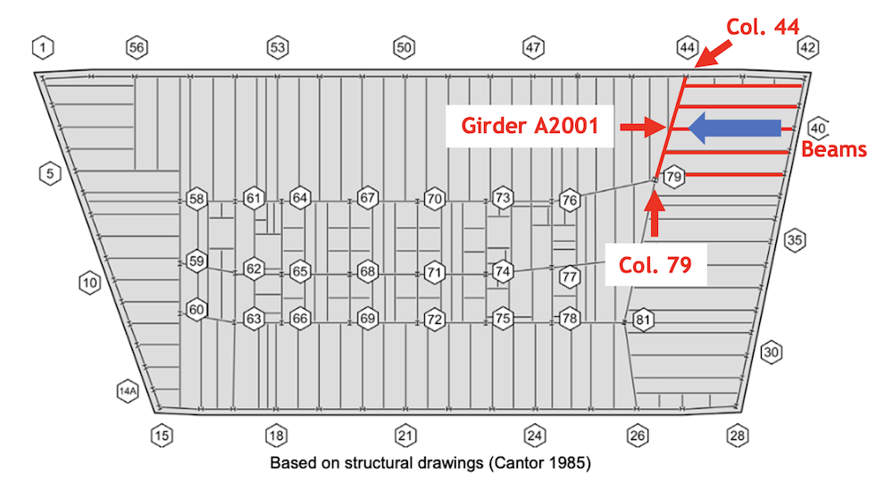
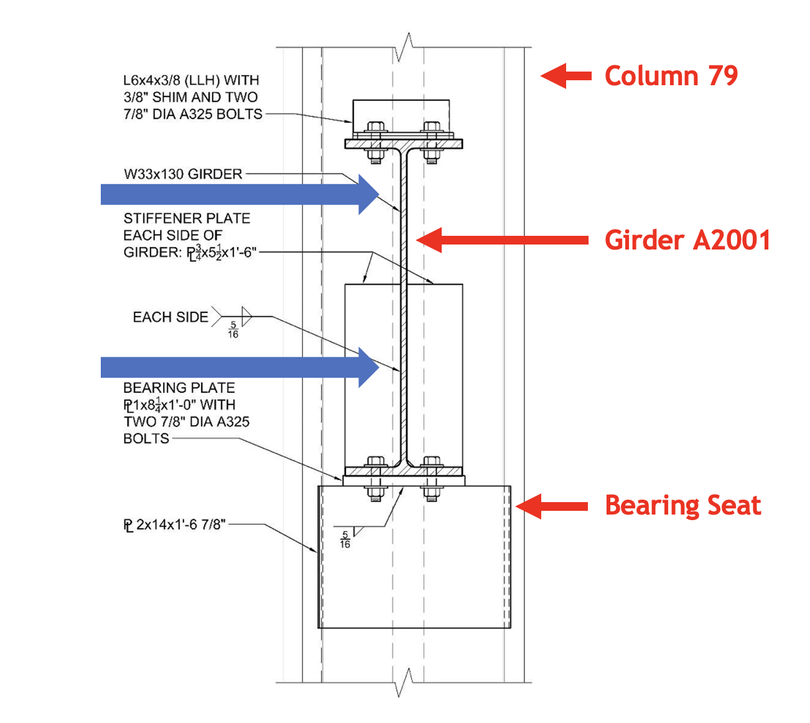
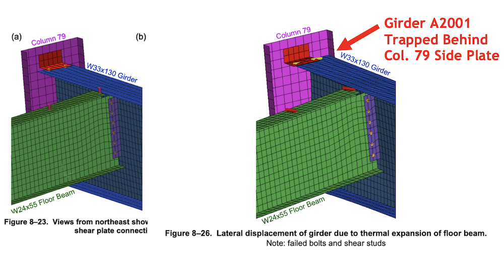
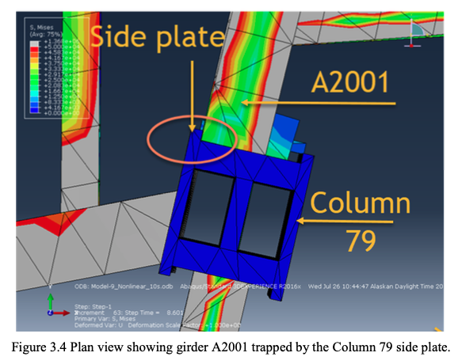
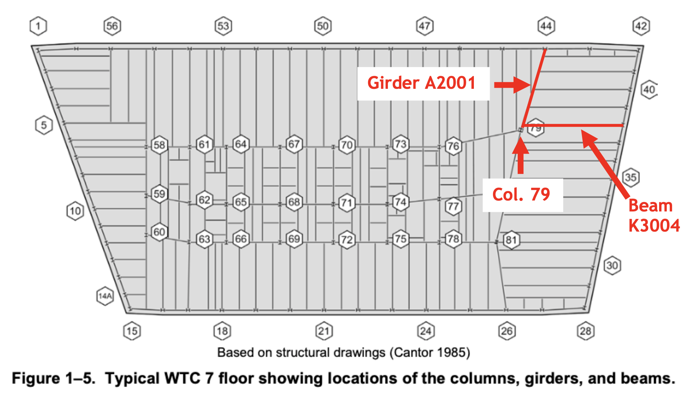
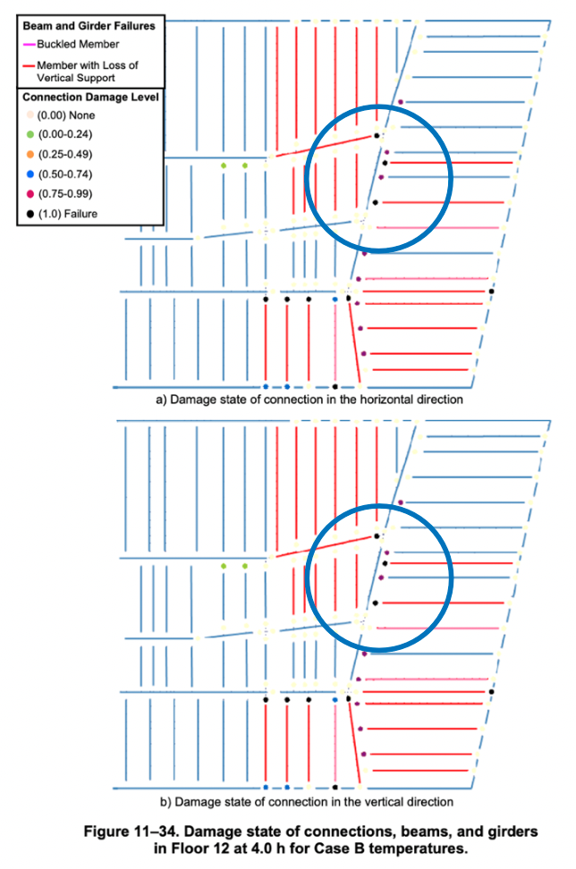

In Part 1 of this series, I examined what is perhaps the most consequential and flagrantly false aspect of the computer modeling performed by the National Institute of Standards and Technology during its six-year investigation into the destruction of World Trade Center Building 7. This was NIST’s omission of an important structural component called “web stiffeners” that were attached to a girder on the 13th floor of Building 7. The alleged failure of this girder, Girder A2001, is central to NIST’s story of how the building collapsed.
In the 2020 request for correction to NIST’s Building 7 report — which is the subject of this series — NIST was asked to rerun its analysis with these web stiffeners added. Instead of taking this corrective measure, NIST produced a patently absurd explanation for why it omitted the web stiffeners. In doing so, it effectively validated one of the main longstanding criticisms of its report: Namely, the web stiffeners on Girder A2001 make NIST’s probable collapse sequence physically impossible.
In Part 2, I will examine the three other aspects of NIST’s probable collapse sequence that were critiqued in the first half of the request for correction.
The first two aspects, like the omitted web stiffeners, have to do with the initiating event in NIST’s probable sequence, i.e., Girder A2001 allegedly being pushed off of its seat by thermally expanding floor beams that framed into it. (A refresher on NIST’s probable collapse sequence is provided below.)
The third aspect I will discuss is what NIST claims happened immediately after Girder A2001 was pushed off of its seat: a supposed cascade of floor failures in the northeast corner of the building from the 13th floor down to the 5th floor.
Whereas NIST provided a totally ludicrous explanation for having the omitted web stiffeners from its model, it essentially provided no response whatsoever regarding these other three items in the request for correction. This was despite the fact that these sections of the request for correction invited NIST to stand by the claims in its report if it could substantiate them with further information. Instead, NIST declined to provide even the most basic of information to substantiate these aspects of its probable collapse sequence. (Keep in mind that NIST’s information quality standards require a “point-by-point response to any relevant data quality arguments contained in the request.”)
As a result, NIST’s responses — or lack thereof — to these three items in request for correction confirm that NIST’s probable collapse sequence is not only physically impossible for three additional reasons but also that the probable collapse sequence does not even reach the level of being a coherent series of events.
If all of this seems a bit abstract, it will hopefully be clear by the end of this article.
Before I discuss these three aspects of NIST’s probable collapse sequence, here’s a quick refresher. (Note: If you’re already familiar with NIST’s probable collapse sequence, you may want to skip to the next section.)


Now we will rewind to the first step listed above: Floor beams in the northeast corner of Building 7’s 13th floor thermally expanding enough to push Girder A2001 off of its bearing seat at Column 79.
The first event that would have prevented Girder A2001 from being pushed off of its seat at Column 79 — before the girder could even travel far enough for the presence of the web stiffeners to become relevant — is that the end of the girder would have become trapped behind the side plate of Column 79, thus preventing the girder from being pushed any further westward. This issue was covered in Section A of the request for correction (see page 8).
As noted in Part 1 of this series (and in Section A of the request for correction), the trapping of Girder A2001 behind Column 79’s side plate was predicted both in the preliminary analysis of the northeast corner floor system conducted by NIST and in the analysis conducted by researchers at the University of Alaska Fairbanks (UAF).
The trapping of Girder A2001 would be expected to occur because as the girder is heated — which it would be in any situation where the floor beams framing into it are heated — it would expand length-wise. As it elongates and is pushed westward by the thermally expanding floor beams at the same time, it would become trapped.
The trapping of Girder A2001 behind Column 79’s side plate in NIST’s preliminary analysis is illustrated in Figures 8-23 and 8-26 of NCSTAR 1-9, which are presented below the same way they were presented in the request for correction. In Figure 8-23, Girder A2001 is in its original position. In Figure 8-26, the girder is trapped behind Column 79’s side plate after expanding and being pushed westward.

The trapping of Girder A2001 behind Column 79’s side plate in the UAF analysis is illustrated in Figure 3.4 from the UAF report, shown below.

Despite Girder A2001 becoming trapped behind the side plate of Column 79 in NIST’s preliminary analysis, NIST ultimately concluded, based on its main analysis, that the floor beams expanded “enough for the girder to walk off its support at Column 79.” However, as the request for correction noted, NIST’s report provides no analyses, calculations, or figures demonstrating how Girder A2001 was able to move past Column 79’s side plate in NIST’s main analysis.
The request for correction then went through a detailed examination of the only scenario where this could happen (see page 11), which would involve Girder A2001 somehow being pushed westward by the thermally expanding floor beams before it elongated due to thermal expansion and moved within the envelope of Column 79’s side plate.
But, as the request for correction noted, at the temperature NIST determined for the girder’s connections at Column 79 to fail so that the girder could move freely — which was 164°C — the girder would already have expanded enough to move within the envelope of Column 79’s side plate. Moreover, the request for correction noted that careful review of NIST’s fire simulations shows that Girder A2001 would have reached 164°C long before the beams to its east were heated sufficiently to push the girder to the west at least 3.678 inches (which is the distance from Girder A2001’s original position to Column 79’s side plate). Based on NIST’s Coefficient of Thermal Expansion, 3.678 inches of thermal expansion would not be reached in the floor beam closest to Column 79 (beam K3004, to be discussed below) until around 430°C, at which point Girder A2001, even if at a lower temperature than the floor beams, would be well within the envelope of Column 79’s side plate.
The request for correction therefore asked NIST to revise its report to reflect that Column 79’s side plate would have prevented Girder A2001 from moving westward enough to walk off its support at Column 79 — or provide analysis showing how Girder A2001 was able to move past Column 79’s side plate.
Astonishingly — though nothing should really be astonishing when it comes to NIST’s Building 7 investigation — NIST’s only response to this section of the request for correction was to describe spatial relationship between Girder A2001, Column 79, and their connection at room temperature. NIST wrote in its initial decision (see page 2):
“NIST disagrees that the 16-story ANSYS model ignored the effect that Column 79’s side plate would have on the walk-off of Girder A2001. The full-scale model has detailed connection models that are consistent with the fabrication shop drawings, as shown in Figures 8-21 and 11-15 of the WTC 7 report. The Girder A2001 and Column 79 connection locates the bolts on a seated connection attached to the exterior edges of the Column 79 side plates, with the girder axis at a slight angle to Column 79.”
Essentially, NIST was implying that because the end of Girder A2001 was not within the envelope of Column 79’s side plate at room temperature, it could not become trapped behind Column 79’s side plate. This totally ignores the results of NIST’s own preliminary analysis and the arguments made in the request for correction showing that, when heated, Girder A2001 would elongate and become trapped behind Column 79’s side plate.
In the appeal filed a month after NIST issued its initial decision, we blasted NIST for its wholly unsubstantive response to the arguments concerning Column 79’s side plate, and we demanded that, for NIST to stand by its story in its final decision, it would need to provide analysis, calculations, or figures explaining how Girder A2001 moved westward past the Column 79 side plate. In particular, the appeal argued (see page 10):
“NIST must identify both the temperature of Girder A2001, the amount of thermal expansion of Girder A2001, and the distance of Girder A2001 from the Column 79 side plate at the moment Girder A2001 moved past the Column 79 side plate.”
Almost needless to say, in its final decision NIST provided none of these particulars to substantiate its story of how Girder A2001 was able to avoid Column 79’s side plate and be pushed westward “enough for the girder to walk off its support at Column 79.”
Indeed, NIST’s final decision was even more superficial and evasive than its initial decision. The barely five-page letter boiled down to a single paragraph in which NIST baldly asserted that AE911Truth’s approach “has many differences” from NIST’s and that “[d]ue to these differences, the resulting outcomes . . . do not have an impact on the findings and recommendations of NIST’s Final Report….”
The upshot is that NIST is unable to explain how Girder A2001 was able to avoid becoming trapped behind Column 79’s side plate.
What it amounts to is further confirmation that NIST’s probable collapse sequence is physically impossible as well as incoherent — for NIST has yet to provide basic information on how Girder A2001 was able to move past Column 79’s side plate.
Supposing in an alternate universe that Girder A2001 could somehow avoid becoming trapped behind Column 79’s side plate, the next thing that would have prevented Girder A2001 from being pushed off of its seat at Column 79 is the simple fact that the key floor beam framing into Girder A2001 — called beam K3004 — couldn’t have expanded enough to push Girder A2001 off of its seat. This issue, which is probably the easiest criticism of NIST’s probable collapse sequence to understand, was covered in Section B of the request for correction (see page 15).
The reason that beam K3004 is so important is that it was the closest beam to Column 79 framing into Girder A2001 from the east. (See NIST’s Figure 1-5 below, which was used in the request for correction with notations added to identify beam K3004, Girder A2001, and Column 79.) Therefore, the thermal expansion of beam K3004 alone dictated the extent of westward displacement of Girder A2001 at Column 79. Even if the beams to the north were expanding more than beam K3004 was, beam K3004 — because of its connection to the girder — would restrain the end of the girder from moving westward.

The giveaway that NIST knew beam K3004 could not have expanded enough to push Girder A2001 off of its seat at Column 79 is that NIST’s report originally misrepresented the width of the girder’s bearing seat at Column 79 as 11 inches. Thus, NIST wrote, “when the girder end at Column 79 had been pushed laterally at least 5.5 in., it was no longer supported by the bearing seat.”
But, in fact, the bearing seat at Column 79 was 12 inches, not 11 inches, wide. Independent researchers discovered this fact a few years after the NIST report was released and brought it to NIST’s attention. NIST was then forced to issue an erratum correcting its report, in which it updated the width of the bearing seat to 12 inches and the distance that Girder A2001 needed to travel in order to walk off of the bearing seat to 6.25 inches. NIST claimed that these were merely “typographical errors” and that “[t]he dimensions and lateral displacements used in the analyses were correct.”
The problem for NIST, however — and the reason to be skeptical of NIST’s claim that these were unintentional typographical errors — is that beam K3004 could expand no further than 5.728 inches, which would be reached at 654°C, as shown in Exhibit D of the request for correction. This is because as structural members are heated, they simultaneously expand and sag, and these behaviors have countervailing effects on the length of the member. Given the features of beam K3004, the sagging of the beam would begin to overtake the expansion of the beam at 654°C, and the beam would become progressively shorter the more it was heated above 654°C.
Thus, when the distance needed for Girder A2001 to walk off of its seat at Column 79 was supposedly 5.5 inches, walk-off was conceivable. However, when the distance needed for the girder to walk off of its seat is correctly recognized as 6.25 inches, walk-off is impossible.
The request for correction therefore asked NIST to revise its report to reflect that beam K3004 could not thermally expand enough to cause the walk-off of Girder A2001 — or provide analysis showing that beam K3004 was able to thermally expand enough to cause the walk-off of Girder A2001.
Much like NIST’s response to Section A of the request for correction, its response to this section — which can be found on page 3 of its initial decision — was entirely meaningless and totally unresponsive to the arguments in the request for correction. All NIST did in its response was to make general assertions about the validity of its model and restate, with no supporting arguments or analysis, a step in its probable collapse sequence — namely, that the northeast floor beams thermally expanded against Girder A2001 until the connection at Column 79 failed.
As our appeal subsequently noted, the fundamental questions that NIST needed to address were as follows: (1) Did beam K3004 dictate the extent of westward displacement of Girder A2001 — or did beam K3004’s connection to Girder A2001 perhaps break, thus allowing Girder A2001 to move freely from beam K3004? (2) Assuming that beam K3004 did dictate the extent of westward displacement of Girder A2001, what was the amount of thermal expansion of beam K3004?
Once again, neither NIST’s initial decision nor its final decision provided these particulars to substantiate its story of how Girder A2001 was pushed westward “enough for the girder to walk off its support at Column 79.”
The only thing NIST had to do was explain why the thermal expansion calculations in Exhibit D of the request for correction were incorrect and provide a value for how much beam K3004 expanded. But it didn’t.
This is yet further confirmation that NIST’s probable collapse sequence is physically impossible as well as incoherent — for NIST has yet to provide basic information about the length that beam K3004 thermally expanded.
Now let’s fast-forward to after Girder A2001 allegedly walked off of its seat — which we have already shown could not have occurred for three different reasons: (1) Girder A2001 would have become trapped behind Column 79’s side plate; (2) Beam K3004 could not have expanded enough to push Girder A2001 off of its seat; (3) The web stiffeners on Girder A2001 would have prevented it from walking off its seat.
But supposing the walk-off of Girder A2001 were possible, the next step in NIST’s probable collapse sequence has Girder A2001 and the floor section attached to it falling onto the northeast section of the 12th floor below and breaking the floor. The northeast corner of the 12th floor then falls onto the northeast corner of 11th floor, and so on, resulting in a cascade of floor failures all the way down to the 5th floor.
The problem with NIST’s scenario is that the collapse of Floor 13’s Girder A2001 and the adjoining floor section, had it actually happened, could not have imposed enough force to break the floor below and initiate a cascade of floor failures. This issue was covered in Section D of the request for correction (see page 22).
In a nutshell, as the request for correction noted, the impact force of Floor 13 at room temperature falling onto Floor 12 would be 61,950 lb. The impact force would be even less at higher temperatures, because the stiffness of Girder A2001 would be reduced. However, the impact force required to shear the Floor 12 girders connecting to Column 79 from the north, west, and south (there was no girder connecting to Column 79 from the east) would have been 632,000 lb., 645,000 lb., and 407,000 lb., respectively.
What makes this step in NIST’s probable collapse sequence especially incoherent even by the standards of NIST’s report is that NIST does not even explain which girder on Floor 12 was broken by the collapse of Floor 13.
As the request for correction notes, one might assume that the girder directly beneath Floor 13’s Girder A2001 (i.e., Floor 12’s Girder A2001) would be the one to have broken. But that assumption is contradicted by NIST’s claim that “[t]here was still some lateral support [for Column 79] in the north direction at Floors 8 to 12 and Floor 14, as the erection bolts in the seated connections had all failed at these girder ends, but the girders had not walked off the bearing seats.” (Emphasis added.) Furthermore, while preparing the appeal to NIST’s initial decision, we discovered that, according to NIST, the Floor 12 girder framing into Column 79 from the west (Girder A2015) had already fallen due to its connection at Column 79 being broken.
So, with the Floor 12 girder to the north still connected to Column 79 after Floor 13’s collapse and the Floor 12 girder to the west having already fallen, we are left to assume that the walk-off of Floor 13’s Girder A2001 on the north side of Column 79 somehow broke the girder connections of Floor 12’s Girder A2002 on the south side of Column 79. But the only way this could conceivably have happened was if Girder A2002’s connection to Column 79 were already damaged.
However, when we dig further into NIST’s fire damage estimates, we find in Figure 11-34 of NCSTAR 1-9, shown below, that Floor 12’s Girder A2002 and its connections to both Column 79 and Column 80 were undamaged, as indicated by the light-yellow dots on the ends of the girder to the south of Column 79. Thus, it would’ve taken the full 407,000 lb. of force to shear Girder A2002’s connection at Column 79. By contrast, the impact force of Floor 13 falling onto Floor 12 would have been 61,950 lb. or less.

In short, NIST does not provide a coherent explanation of how the cascade of floor failures took place. Furthermore, calculations show that even if NIST’s assumptions about the fire damage to Floor 12 were accurate, the collapse of Floor 13 would not have been able to break Floor 12 and initiate a cascade of floor failures.
Just as NIST did for Sections A and B of the request for correction, it provided a totally meaningless response to this section (see page 5 of NIST’s initial decision). The only part of NIST’s response that is not boilerplate language about the capabilities and validity of NIST’s model is as follows:
“The simulations showed that the structural damage at 4 h from the multiple floor fires was the primary cause of the collapse and that debris damage from WTC 1 contributed to the rate of the collapse progression. The simulation with lesser structural damage at 3.5 h had several girders in Floors 12 to 14 that were connected to Columns 79, 80, and 81, and fell to the floors below. However, the damage was not sufficient to initiate a global collapse (NCSTAR 1-9, page 603-604).”
By differentiating between the structural damage from the “multiple floor fires” at four hours compared to 3.5 hours and by stating that several girders on Floors 12 to 14 fell to the floors below at 3.5 hours but did not initiate a global collapse, NIST is vaguely implying that it was fire damage to lower floors that enabled the cascade of floor failures to ensue.
But, as I noted above, when we dig into the details of NIST’s estimated fire damage to Floor 12, we find there was not sufficient pre-existing damage to allow Floor 12 to collapse — not to mention the fact that NIST doesn’t explain which girder on Floor 12 was broken by Floor 13’s collapse.
Naturally, NIST’s initial decision and its final decision provided no clarification or details substantiating its story of how a cascade of floor failures proceeded from Floor 13 all the way down to Floor 5. Thus, once again, NIST has provided confirmation that its probable collapse sequence is physically impossible as well as being remarkably incoherent. NIST has yet to explain even the most basic elements of its story.
We are therefore left with four separate, independent reasons that the sequence of events that NIST claims led to the buckling of Column 79 could not have occurred.
In Part 3 of this series, we will move on to examining the arguments made in Section E of the request for correction — to which NIST, again, provided no meaningful response. These arguments methodically showed how, contrary to what NIST claims, NIST’s global collapse analysis (i.e., its computer model) does not match the building’s observed behavior “reasonably well.”